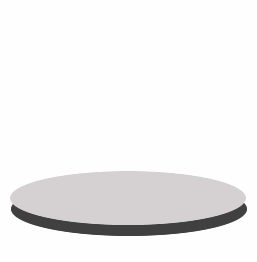

Frequently Asked Questions
Overview
- What is Sandboxie and how is it different than other solutions?
- How safe would I be, by using Sandboxie?
- Do I need other solutions if I use Sandboxie?
- What kinds of programs can I run using Sandboxie?
- What are the technical requirements to run Sandboxie?
Technical
- How does Sandboxie protect me, technically?
- Will Sandboxie protect me from malicious key-loggers?
- Some competing products require a reboot to initiate sandboxing, why?
- Why am I getting some Messages from Sandbox Driver?
- Why are so many files copied into the sandbox?
- What are SandboxieRpcSs and SandboxieDcomLaunch?
- How can I use Sandboxie to protect myself from viruses in email?
- How to configure Sandboxie for only an occasional use?
Problems
- How do I make Quick Recovery show my saved favorites and downloads?
- I saved a downloaded file, a document or an email inside the sandbox, how do I get it out?
- Why does the wrong program start when I run my default Web browser sandboxed?
- If you have a program that doesn't work properly sandboxed, please look it up on the Known Conflicts page before posting a problem report.
Back to HelpTopics
What is Sandboxie and how is it different than other solutions?
Think of your PC as a piece of paper. Every program you run writes on the paper. When you run your browser, it writes on the paper about every site you visited. And any malware you come across will usually try to write itself into the paper.
Traditional privacy and anti-malware software try to locate and erase any writings they think you wouldn't want on the paper. Most of the times they get it right. But first the makers of these solutions must teach the solution what to look for on the paper, and also how to erase it safely.
On the other hand, the Sandboxie sandbox works like a transparency layer placed over the paper. Programs write on the transparency layer and to them it looks like the real paper. When you delete the sandbox, it's like removing the transparency layer, the unchanged, real paper is revealed.

Thanks to esalkin for the paper metaphor. Thanks to warwagon for the graphics.
Back to Table of Contents
How safe would I be, by using Sandboxie?
You would be quite safe using Sandboxie. It should be noted that, from time to time, people are able to find some vulnerability in Sandboxie, an open hole through which malicious software can still infiltrate the system.
This is very rare and is quickly resolved by closing the hole that is the attack vector.
Thus it's a good idea to have more traditional anti-malware software. This is is the subject of the following question.
Back to Table of Contents
Do I need other solutions if I use Sandboxie?
Sandboxie may be your first line of defense, but it should certainly be complemented by the more traditional anti-virus and anti-malware solutions. These solutions can let you know if your system does become infected in any way.
Typically, those other solutions employ various forms of pattern matching to discover malicious software and other threats. Sandboxie, on the other hand, quite simply does not trust any software code enough to let it out of the sandbox.
The combination of the two approaches should keep malicious software -- which is serving the interest of other unknown parties -- out of your computer.
Back to Table of Contents
What kinds of programs can I run using Sandboxie?
You should be able to run most applications sandboxed.
- Major Web browsers
- Mail and news readers
- instant messengers and chat clients
- peer-to-peer networking
- Office Suites (MS Office, LibreOffice, OpenOffice)
- Most games
- in particular, online games which download extension software code
In all cases on this list, your client-side program is exposed to remote software code, which could use the program as a channel to infiltrate your system. By running the program sandboxed, you greatly increase the control you have over that channel.
And in addition, you can even install some applications into the sandbox.
Back to Table of Contents
What are the requirements to run Sandboxie?
Sandboxie works on
- Windows XP SP3 (Up until Sandboxie 5.22 and solely in v5.40)
- Windows Vista SP2 (Up until Sandboxie 5.22)
- Windows 7 32/64
- Windows 8.1 32/64
- Windows 10 32/64 (Modern Apps not supported)
- Windows 11 64 (Modern Apps not supported)
See the download page.
Supported Web Browsers (32 & 64 bit supported)
- Internet Explorer 8, 9, 10 & 11
- Microsoft Edge (Chromium)
- Google Chrome
- Firefox
- Opera
- PaleMoon
- SeaMonkey
- Vivaldi
- Waterfox
- Brave Browser
- And many others!
Sandboxie does not work on...
- Windows XP x64 bit
- Windows 95, 98 or ME
- Mac or Linux operating systems.
Sandboxie should not be installed on Microsoft Server Operating Systems as it's not directly supported. However, we have many users that have deployed it successfully.
You can run Sandboxie in a VM Environment (VMWare, VirtualBox, Apple BootCamp, etc.)
There are no particular hardware requirements to run Sandboxie. However, we do no test on touchscreen devices (many users have successfully installed Sandboxie on Surface pro and similar devices).
Sandboxie needs only a small amount of memory and should have a very small impact on performance.
Back to Table of Contents
How does Sandboxie protect me, technically?
Sandboxie extends the operating system (OS) with sandboxing capabilities by blending into it. Applications can never access hardware such as disk storage directly, they have to ask the OS to do it for them. Since Sandboxie integrates into the OS, it can do what it does without risk of being circumvented.
The following classes of system objects are supervised by Sandboxie: Files, Disk Devices, Registry Keys, Process and Thread objects, Driver objects, and objects used for Inter-process communication: Named Pipes and Mailbox Objects, Events, Mutexes (Mutants in NT speak), Semaphores, Sections and LPC Ports. For some more information on this, see Sandbox Hierarchy.
Sandboxie also takes measures to prevent programs executing inside the sandbox from hijacking non-sandboxed programs and using them as a vehicle to operate outside the sandbox. For the same reason, Sandboxie doesn't allow a sandboxed process from reading the memory of unsandboxed processes and it provides a feature to hide selected host processes from sandboxed processes. For more information about this, see #59 and 0.3 / 5.42 notes.
Sandboxie also prevents programs executing inside the sandbox from loading drivers directly. It also prevents programs from asking a central system component, known as the Service Control Manager, to load drivers on their behalf. In this way, drivers, and more importantly, rootkits, cannot be installed by a sandboxed program.
It should be noted, however, that Sandboxie does not typically prevent the exfiltration of user data by processes running under its supervision without advanced configuration, as the default file and registry access scheme is Allow Read to anything except when the user specified a particular path to be closed. However, by careful configuration of the ClosedFilePath and ClosedKeyPath settings, you can achieve this goal as well.
If you want to follow the future development on this, see New privacy enhanced File/Registry access scheme, White list/Template Mode, plans and discussion.
Back to Table of Contents
Will Sandboxie protect me from malicious key-loggers?
Yes, to some extent. First of all, your system (outside the sandbox) must not have been already compromised by an installed key-logger. Sandboxie can not protect against key-loggers that are already running outside the sandbox.
You may want to consider always browsing sandboxed, so you don't accidentally get any key-loggers into your system.
It is very difficult to reliably detect a key-logger. For a lengthy explanation, see Detecting Key Loggers. So the most important tool Sandboxie offers you for protection against key-loggers, is to delete the sandbox.
When you stop all sandboxed activity (in all sandboxes), then proceed to delete the sandbox you're about to use, you can be fairly certain that all key-loggers are dead.
Back to Table of Contents
Some competing products require a reboot to initiate sandboxing, why?
Changes to the computing environment must eventually make their way to disk storage, if they are to be permanent. This obviously applies to files. But it also applies to things like settings and preferences saved in the system registry.
Some competing products require a reboot before each use, because they sandbox disk storage as a whole. They provide the operating system and everything in it with a single virtual disk, which is used to trap those permanent changes.
The operating system is not designed to use one disk for some tasks, and another disk for other tasks. Therefore a reboot is required to switch to and from the virtual disk.
Sandboxie does not require a reboot because it sandboxes access to files, rather than to the disk as a whole. It also sandboxes access to registry keys. It also sandboxes access to many other classes of system components, in order to trick the sandboxed program into believing that it isn't being tricked.
This low-level sandboxing in some competing products makes it possible to install a wider range of applications and system tools -- including system drivers -- into the sandbox. Sandboxie can install most applications into the sandbox, but not system software nor drivers.
It becomes apparent that, like most other things, each tool has its advantages and disadvantages, and one must choose the best tool for the task at hand.
Back to Table of Contents
Why am I getting some Messages from Sandbox Driver?
Not all messages are errors, some simply inform you of an event that has occurred. For more information, see SBIE Messages and Log Messages To A File.
Back to Table of Contents
Why are so many files copied into the sandbox?
When a program accesses a file, it declares what operations it plans to do on the file: if it plans to read from the file, to write the file, to change its attributes, and so on. Whenever a program declares any kind of write access to a file, Sandboxie copies it into the sandbox. In some cases, programs declare they intend to write to the file when in fact they do not, but nevertheless Sandboxie must copy the file into the sandbox.
Back to Table of Contents
What are SandboxieRpcSs and SandboxieDcomLaunch?
See Service Programs.
Back to Table of Contents
How can I use Sandboxie to protect myself from viruses in email?
See full article: Email Protection.
Back to Table of Contents
How to configure Sandboxie for only an occasional use?
By default Sandboxie is configured to load and start automatically. To have Sandboxie load only when you need it, make the following changes.
-
In Sandboxie Control, open the Configure -> Shell Integration window, and clear the checkbox When Windows starts to stop Sandboxie Control from starting.
-
Open the Windows Services configuration window: Start menu -> Control Panel -> Administrative Tools -> Services. Then locate the Sandboxie Service. Double click to bring up its properties window. Set its Startup type to Manual rather than automatic.
-
The driver component of Sandboxie is started by the Sandboxie Service. Therefore, setting the service to start manually, indirectly also sets the driver to start manually.
Starting Sandboxie Control will also start the service. (But note that Administrative rights are required to start a service.)
Back to Table of Contents
How do I make Quick Recovery show my saved favorites and downloads?
You may not see all your folders in Quick Recovery, as only a few are configured by default in the initial installation. See also Quick Recovery.
Back to Table of Contents
I saved a downloaded file, a document or an email inside the sandbox, how do I get it out?
If you read What is Sandboxie then you know Sandboxie is like a transparency layer placed over the paper. (The paper is your computer.) When you save files (downloads, documents, emails, or anything else) through a sandboxed program, these files go into the transparency layer that is the sandbox.
You can use Quick Recovery to get these files out. Unless configured otherwise, Quick Recovery looks in your Documents, Favorites, Desktop and Downloads folders. If you save the files to either of these folders, then you can use Quick Recovery to easily get them out.
Another approach is configuring one or more folders as an OpenFilePath. Saving files into such folders bypasses the sandbox mechanism, and goes directly to the real folders. Setting this is more complicated, but may also prove useful, in some cases.
Back to Table of Contents
Why does the wrong program start when I run my default Web browser sandboxed?
This happens for some people.
In Windows 7, open Control Panel in Icon view and select Default Programs > Set your default programs. You can then select the browser you want as default.
In Windows 8/8.1, point to (but do not click) the lower-right or top-right corner of the screen, and then click the Settings icon. In the lower-right corner, click Change PC Settings > Search and apps > Defaults. You can then select the browser you want as default.
If using Windows 10/11, ensure that your default Web Browser for Windows is set correctly (click on the Start menu, type "default apps" and Choose your default apps).
Back to Table of Contents